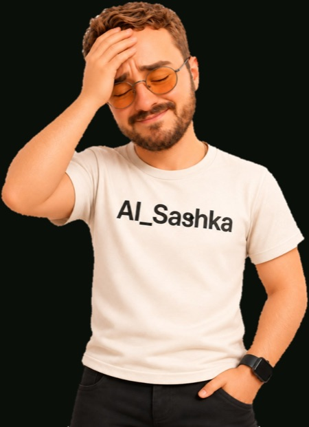
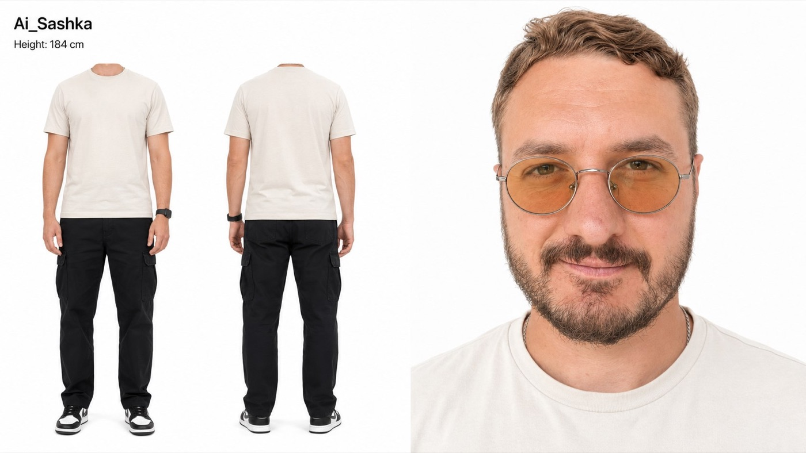
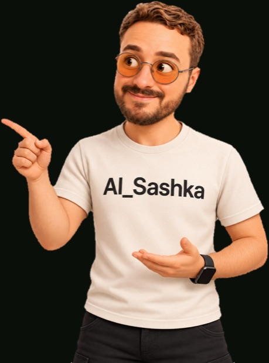
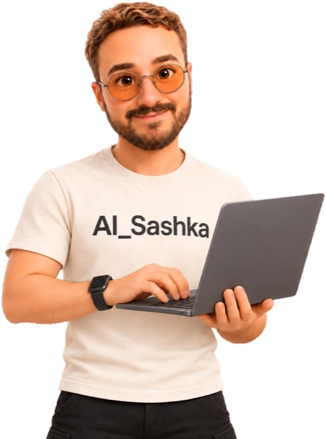
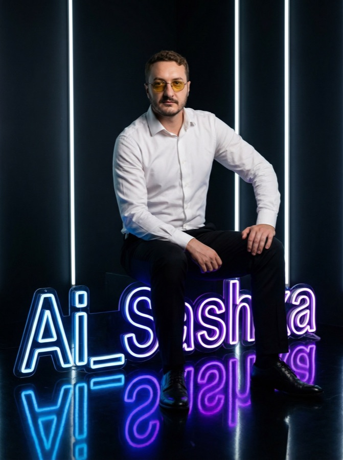
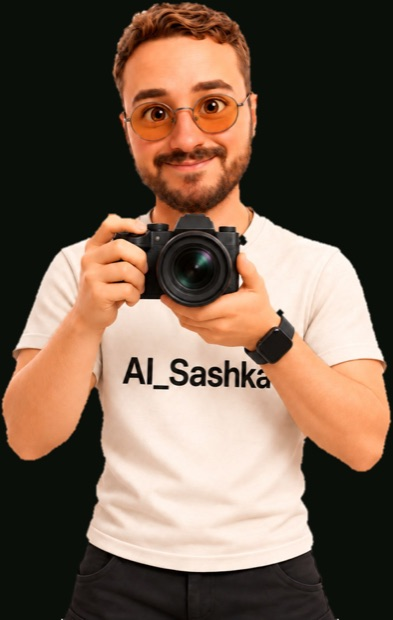

01
Реалістичне відео з собою
Ти в кадрі, рухаєшся й говориш. Плюс товар у руках і локація на твій вибір.
Готова технологія створення контенту, де в кадрі саме ти — без камери, світла й знімальної групи. Від картки свого АІ-двійника до вірусного відео, каруселі та мультика з собою в головній ролі.
+ комплект бонусів, при купівлі мінікурсу до кінця таймера
До кінця спеціальної пропозиції
кожен бонус прибирає окрему причину, через яку люди зупиняються на першому тижні
🎯 Результат: усередині майстер-промт для налаштування і база знань до нього: структура промтів, як задавати стиль, як підключати референси й що робити, коли результат пішов не туди. Працює з будь-якою нейронкою, з якою ти сидиш постійно.
🎯 Результат: покрокове налаштування ChatGPT під мобільний — генерація запускається прямо з телефону, у черзі й у дорозі. Компʼютер перестає бути умовою: бонус саме для тих, у кого ноутбука немає взагалі або він завжди зайнятий.
🎯 Результат: кредити падають на баланс із надбавкою — поповнив і одразу маєш на 10% більше генерацій. Майже всі нейронки мінікурсу працюють з цього балансу, оплата йде українською карткою без VPN, кредити не згорають. На дистанції ця надбавка — десятки додаткових відео.
Бонуси зникають разом із таймером. Далі мінікурс продається без них.

Кожна з цих проблем має конкретне рішення. Я показую всі чотири на пʼяти уроках.
Ти в кадрі, рухаєшся й говориш. Плюс товар у руках і локація на твій вибір.
Формат, який зараз збирає охоплення, з тобою в головній ролі.
Твій персонаж говорить українською, з правильними наголосами.
Називаєш ідею вголос — нейронка пише текст, збирає дизайн і верстає слайди.
Ти в студії, в іншому місті, в іншому одязі. Фотосесія без фотографа й без виходу з дому.
Далі все залежить від того, що тобі потрібно: контент для блогу, реклама товару чи ролики на замовлення.
Дізнатись програму→Соцмережі є, ідеї є, а перед камерою все зникає. Тепер твоє обличчя в кадрі без камери взагалі.
Світло, дублі, макіяж, монтаж — на один ролик іде півдня. Генерація займає хвилини.
Наймати дорого, вести самому ніколи. АІ закриває візуал і тексти, тобі лишається рішення.
Реклама з живою людиною в кадрі, без знімальної групи, моделей і оренди локації.
Обличчя в контенті потрібне постійно, а знімати щотижня не виходить. Двійник знімає це питання.
Твій рілс говорить іншою мовою твоїм же голосом і з твоєю манерою.
Ти опановуєш формат, який зараз мало хто вміє робити якісно.
Якщо впізнав себе хоча б в одному пункті — цей мінікурс тобі підійде.

🎯 Результат: у тебе є твоя цифрова копія, яка не змінюється від генерації до генерації, і асистент, налаштований під роботу з нею. Зникає найбільша причина розчарувань: більше не буває так, що з десяти роликів на тебе схожі два. Далі кожен урок працює з цією карткою, тому все, що ти згенеруєш, буде саме тобою.
🎯 Результат: ти збираєш карусель за час, поки закипає чайник, і кожен такий пост приводить людей у дірект, де з ними працює бот. Зникає найдовша частина роботи над постом і найпровальніша частина після нього: коли пост зібрав збереження, а далі нічого не сталося. Твій контент перестає бути просто контентом і починає приводити заявки, поки ти спиш.
🎯 Результат: ти генеруєш відео, де ти повністю схожий на себе, рухаєшся природно й тримаєш у руках те, що потрібно показати. Зникає ситуація, коли ролик доводиться викидати, бо глядач одразу бачить підробку. Це вже той рівень, який можна ставити в рекламу й показувати замовнику.
🎯 Результат: ти робиш мультики, де в головній ролі ти сам, і твій персонаж говорить українською без акценту й без плутанини в наголосах. Зникає обмеження, через яке більшість українських авторів або мовчки монтують субтитри, або озвучують вручну. Формат підходить і для блогу, і для бізнесу, і для замовлень.
🎯 Результат: у тебе є двійник, який може говорити те, що ти напишеш, будь-якою мовою й твоїм голосом. Зникає щотижнева зйомка: контент виходить рівно тоді, коли в тебе є що сказати, а не тоді, коли ти встиг зібрати світло.
Важливо. Після кожного уроку є домашнє завдання. Виконаєш усі — отримаєш приємний бонус, який помножить твої навички в АІ ×10.

У карусель вшивається кодове слово: «Напиши слово “гайд” у дірект — і я надішлю тобі бонус»
ManyChat ловить це слово й починає діалог автоматично
Бот видає матеріал, відповідає на питання й пропонує твій продукт
У результаті ти маєш не просто підписника, а потенційного клієнта або навіть продаж. Без твоєї участі, навіть коли ти спиш
Як зібрати таку штуку, я показую у другому уроці — з нуля, покроково.
Це вже більше, ніж просто мінікурс про відео з собою, погодься. Я хочу дати тобі реальну користь, а не просто інструкцію.
Після оплати ти одразу потрапляєш у Telegram-бот. Далі щовечора приходить один короткий урок.
Що натиснути, куди завантажити, який промт скопіювати. Без теорії про те, як влаштовані нейромережі.
Промт-інженерію вчити не треба. Ти отримуєш налаштованого асистента, який пише промти замість тебе.
Майже всі нейронки мінікурсу зібрані в одному кабінеті. Оплата українською карткою, без VPN, кредити не згорають. Доступ і персональна умова +10% до кредитів приходять після оплати.
Не виходить — пишеш куратору й отримуєш розбір.
Уся генерація відбувається на серверах нейромереж. Потужний компʼютер не потрібен, а в бонусі є налаштування під роботу з телефону.

Разом ці інструменти:
Я впевнений у якості цього мінікурсу, тому даю 14 днів повної гарантії.
Якщо протягом двох тижнів ти пройдеш уроки, створиш свою картку персонажа й згенеруєш перше відео з собою — але не побачиш цінності або очікуваного результату — я без жодних питань поверну кошти.
Жодних ризиків. Або в тебе зʼявляється контент із собою в кадрі, або я повертаю гроші.
середня оцінка моїх мінікурсів та воркшопів
Знаєш, коли люди справді просять повернення?
Коли випадково придбали мій мінікурс удруге.

Я домовився з платформою, яка зібрала майже всі потрібні нейронки в одному кабінеті — і всі генерації мінікурсу йдуть через неї.
стільки потрібно на нейронки, щоб пройти весь мінікурс
спеціальна ціна
тільки до кінця таймера
Після оплати ти одразу потрапляєш у Telegram-бот. Перший урок приходить завтра.
Бонуси зникають разом із таймером. Далі мінікурс продається без них.
Ось відгуки від моїх студентів з інших навчальних програм. До речі, мої курси вже пройшло 8 600 студентів. З них 90% доходять до кінця та кажуть:
← гортай →

Старт завтра
Перший урок приходить у бот завтра. Далі — пʼять вечорів: щовечора один короткий урок і домашнє завдання.
14 днів гарантії повернення коштів
Так. Перший урок починається з того, як налаштувати асистента, і закінчується твоєю готовою карткою персонажа. Кожен крок — конкретна інструкція: що натиснути, куди завантажити, який промт скопіювати. Промти вже написані, їх достатньо скопіювати.
Саме заради цього перший урок повністю присвячений картці персонажа. Ти один раз створюєш свою точну копію й далі підставляєш її в кожну генерацію. Без картки нейронка щоразу вигадує тебе заново, і виходить схожа людина. З карткою виходиш ти.
Пʼять вечорів: щовечора в бот приходить один короткий урок і домашнє завдання. Доступ до уроків лишається назавжди, тож повертатися до матеріалів можна будь-коли.
Від $30 на весь мінікурс. Практично всі моделі, які ми використовуємо, зібрані на одній платформі: один баланс замість трьох окремих підписок, оплата українською карткою, без VPN, кредити не згорають. Посилання й персональну умову +10% на поповнення ти отримаєш після оплати. Окремо може знадобитися HeyGen для пʼятого уроку, якщо цифровий двійник потрібен під твої задачі.
Це сервіс, який автоматично працює з людьми в діректі. Людина пише кодове слово під твоїм постом — бот сам відповідає, видає матеріали, відповідає на питання й пропонує твої продукти. У другому уроці ми налаштовуємо його з нуля, окремих знань не потрібно.
Так. Це твоє власне обличчя й твій власний голос, ти розпоряджаєшся ними як завгодно. Обмеження стосуються чужих облич, а не твого.
Якщо зробити абияк — зрозуміють одразу. Тому третій урок присвячений саме реалістичності: як прибрати пластикову шкіру, неприродні рухи й розсинхрон між губами й словами. Багато хто взагалі не приховує, що працює через АІ, і це стає окремою причиною підписатися.
У пʼятому уроці ми клонуємо саме твій голос. Двійник говорить тобою, зберігаючи манеру й інтонації, і може говорити іншими мовами, залишаючись упізнаваним.
Ні. Уроки українською, промти готові. Інтерфейси проходимо покроково.
Ні. Генерація відбувається на серверах нейромереж, у тебе в браузері. Другий бонус — це налаштування, з яким генерація запускається просто з телефону.
Це окремий продукт про одну навичку: контент, у якому в кадрі ти. Тут повний цикл в одному місці — картка персонажа, фото, каруселі, реалістичне відео, мультик і цифровий двійник. Раніше цієї теми в такому обсязі в мене не було.
14 днів на повернення коштів. Пройди уроки, зроби перше відео з собою — якщо не побачиш цінності, поверну гроші без запитань.